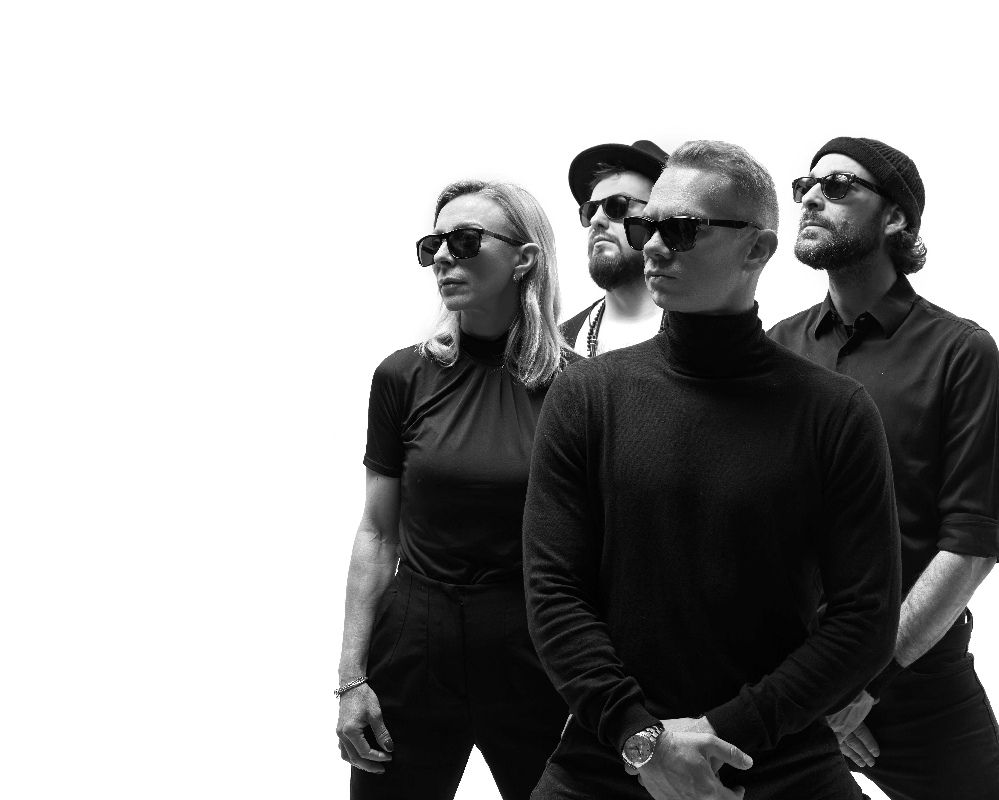
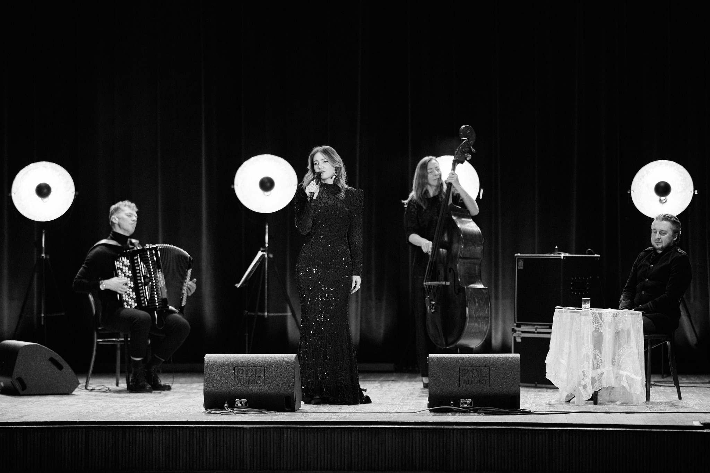

Anatoli Taran is a Belarusian accordionist based in Warsaw, widely recognized for his technically exceptional playing and innovative approach to the instrument. His distinctive sound bridges jazz, tango, and contemporary music — pushing the accordion far beyond its traditional boundaries.
He is a juror at the International Accordion Prize of Castelfidardo (Italy) and an endorsed artist of Victoria Accordions.
Today based in Warsaw, he performs regularly at the city's most atmospheric venues while continuing to develop his ensemble projects for European audiences.



A jazz formation celebrated for its inventive sound — spanning modern jazz and avant-garde. Winners of the 67th Trophée Mondial de l'Accordéon, France 2017.

A dedicated tango project exploring the full emotional range of the genre — from classic Buenos Aires tango to nuevo tango. Performing at Warsaw's finest venues.
Technical precision meets emotional depth. This performance showcases the full range of the accordion as a lead solo instrument.
Exploring contemporary jazz structures and improvisational freedom with the Taran Trio.
A journey into the heart of Argentine Tango, reimagined through the lens of modern European performance.
The synergy of a full quartet. Blending folk roots with avant-garde musical explorations.
+48 575 832 607